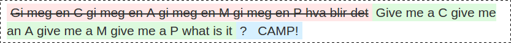
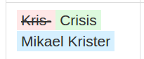

kris-mikael.krister@miles.no


Det er kjedelig å teste React-komponenter
Jest er en test runner
todo: scrshot av jest npm... Jest er et assetion-bibliotek
expect(myWazService()).toEqual({
waz: 14
});
... Jest har debugging-støtte
todo: scrshot av Chrome